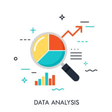
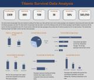
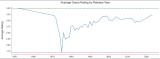
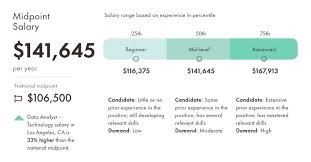
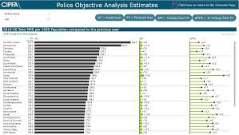
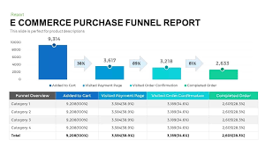
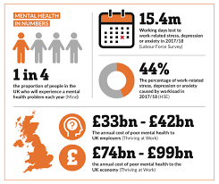
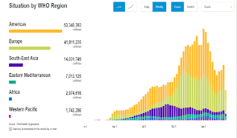

Skills

Python
Numpy

Pandas

Data Analysis

Data Visualization
Web Scraping
API Development
Flask

Data Scientist & Data Analyst
Hello! I'm Mohsin Irfan, a passionate Data Scientist and Data Analyst with over 3 years of experience. I specialize in transforming complex data into actionable insights, driving strategic decision-making, and uncovering hidden patterns that propel business success.
With a strong foundation in statistical analysis, machine learning, and data visualization, I thrive on solving challenging problems and delivering innovative solutions. My expertise spans various industries, and I am adept at using a wide range of tools and technologies to extract valuable information from data.
Beyond my technical skills, I am dedicated to continuous learning and staying at the forefront of the ever-evolving field of data science. I am excited about leveraging data to create impactful results and contribute to the growth of organizations.
Let's connect and explore how we can turn data into powerful stories and strategic assets!

Analyzing the Titanic dataset offers insights into the 1912 maritime disaster, highlighting factors that influenced survival rates. It explores demographics such as age, gender, and passenger class, as well as factors like cabin location and family size. This analysis aids in understanding the dynamics of survival, identifying groups more likely to survive.
Source CodeAnalyzing student result data provides valuable insights into academic performance trends, identifying factors that impact student success and highlighting areas where additional support or interventions may be beneficial.
Source Code
Analyzing popular video games data provides insights into player preferences, game trends, and factors influencing game popularity. It highlights patterns in player behavior, game genre preferences, and the impact of factors such as release date, platform, and game mechanics on sales and player engagement.
Source Code
Analyzing salaries data provides insights into income trends across different demographics, industries, and regions. It highlights factors influencing salary levels such as education, experience, job role, and location. This analysis aids in understanding income disparities, identifying lucrative career paths, and informing strategies for salary negotiation and workforce planning.
Source Code
Analyzing police report data provides insights into crime trends, patterns, and factors influencing criminal activities. It highlights geographical hotspots, types of crimes prevalent in different areas, and the effectiveness of law enforcement interventions. This analysis aids in crime prevention strategies, resource allocation, and community safety initiatives.
Source Code
Analyzing ecommerce purchase data provides insights into consumer behavior, purchasing trends, and factors influencing online shopping habits. It highlights popular products, customer demographics, purchasing frequency, and the impact of promotions or discounts on sales. This analysis aids in understanding market demand, optimizing product offerings, and developing targeted marketing strategies to enhance customer satisfaction and increase sales.
Source CodeThis Banking System is a comprehensive application that simulates a basic banking environment. It allows users to create accounts, deposit and withdraw funds, transfer money between accounts, and view transaction history. The system ensures security by implementing authentication for account access and encryption for sensitive information. It also includes features such as balance inquiries and account management functionalities. This application provides a practical demonstration of banking operations, focusing on user-friendly interactions and secure financial transactions
Source Code
Analyzing mental health data provides insights into prevalence rates, trends in mental health disorders, and factors influencing mental well-being. It highlights demographic differences, access to mental health services, and the impact of interventions such as therapy and medication. This analysis aids in understanding mental health disparities, informing public health policies, and developing effective strategies for mental health promotion and support.
Source Code
Analyzing COVID-19 data provides insights into the spread, impact, and mitigation strategies of the virus. It highlights infection rates, mortality rates, vaccination coverage, and factors influencing the effectiveness of public health measures. This analysis aids in understanding pandemic dynamics, identifying at-risk populations, and informing decision-making for healthcare resource allocation and policy development to manage and mitigate the spread of COVID-19.
Source Code
